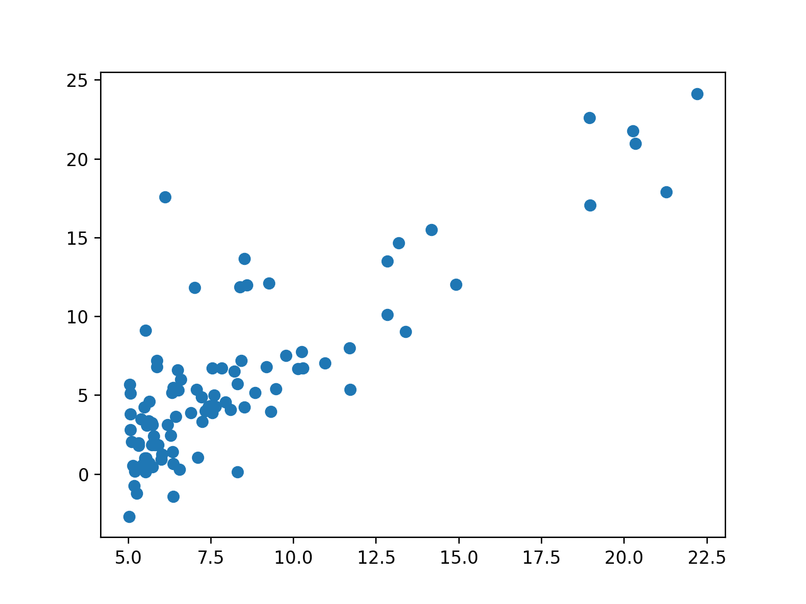
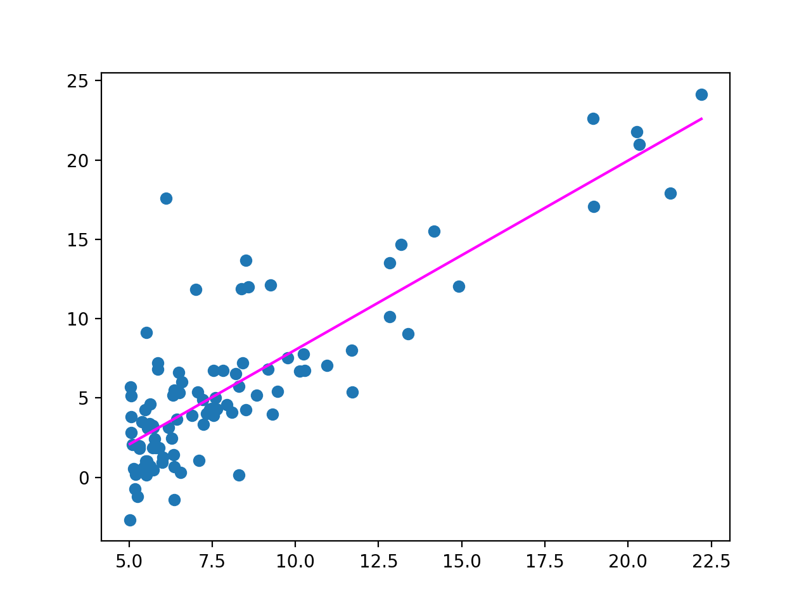
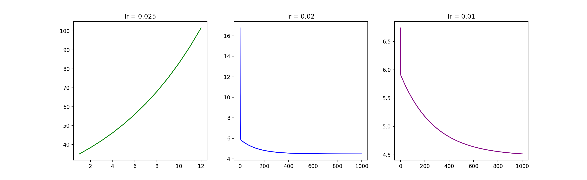

吴恩达机器学习系列课程：https://www.bilibili.com/video/BV164411b7dx
一元线性回归
给定数据集 \[
\left\{\left(x^{(i)},y^{(i)}\right),\;i=1,2,\cdots,m\right\}
\] 试用一线性函数 \(y=\theta_1x+\theta_0\) 拟合之。当然，在数学上，我们熟知最小二乘法可以解决这个问题。
梯度下降法
这是我自学机器学习中遇到的第一个算法，其基本思想很简单。对于代价函数 \(J(\theta_0,\theta_1)\) ，我们想得到它的一个极小值，只需要从任意点开始，选择函数 \(J\) 的梯度方向的逆方向，也即方向导数最大的方向移动一点点，然后不断重复这个过程。
我们知道梯度定义为： \[
\text{grad }J=\left\{\frac{\partial J}{\partial \theta_0},\frac{\partial J}{\partial \theta_1}\right\}
\] 所以不断迭代进行： \[
\theta_j:=\theta_j-\alpha\cdot\frac{\partial J}{\partial\theta_j}
\] 即可。其中，\(\alpha\) 就是这一步的长度，也称为学习率。
学习率的选取很重要，过小则梯度下降很慢，过大则有可能不收敛。
梯度下降解一元线性回归
应用在解一元线性回归问题上，我们定义代价函数为： \[
J(\theta_0,\theta_1)=\frac{1}{2m}\sum_{i=1}^m\left(\theta_1x^{(i)}+\theta_0-y^{(i)}\right)^2
\] 也即是每个数据纵坐标的真实值与估计值的差的平方和的平均，除以 \(2\) 仅是为了后续求导方便，没有什么本质的影响。
由于： \[
\text{grad }J=\left\{\frac{\partial J}{\partial \theta_0},\frac{\partial J}{\partial \theta_1}\right\}=\left\{\frac{1}{m}\sum_{i=1}^m\left(\theta_1x^{(i)}+\theta_0-y^{(i)}\right),\frac{1}{m}\sum_{i=1}^mx_i\left(\theta_1x^{(i)}+\theta_0-y^{(i)}\right)\right\}
\] 于是每一次按照该方向的逆方向走一小步即可。
C++ 实现
对于这个问题，我们可以通过预处理达到每次迭代 \(O(1)\) 地更新。
1 2 3 4 5 6 7 8 9 10 11 12 13 14 15 16 17 18 19 20 21 22 23 24 25 26 27 #include <bits/stdc++.h> using namespace std;const double eps = 1e-8 ;const double alpha = 0.01 ;int m;double sumx, sumy, sumxy, sumx2;double th0, th1;int main () freopen ("ex1data1.txt" , "r" , stdin);double x, y;while (scanf ("%lf,%lf" , &x, &y) != EOF)0 ;while (1 ){double nth0, nth1;1.0 / m * (th1 * sumx - sumy + m * th0);1.0 / m * (th1 * sumx2 - sumxy + sumx * th0);if (fabs (th0 - nth0) < eps && fabs (th1 - nth1) < eps) break ;printf ("%f %f\n" , th0, th1);return 0 ;
得到的结果是：\(\theta_0=-3.895775,\,\theta_1=1.193033\) .
如果把 \(\alpha\) 设为 \(0.1\) ，上面的程序无法得到结果，这是因为步长太大以至于无法收敛，除了人为调小 \(\alpha\) 以外，我尝试了让程序自适应地调整 \(\alpha\) . 具体地，如果 \(\alpha\) 设置合理，我们的代价函数应该是一个随着迭代次数单调递减的函数，所以倘若代价函数出现了增加，我们就需要调小 \(\alpha\) ，基于这个思想，我写下了如下的程序：
1 2 3 4 5 6 7 8 9 10 11 12 13 14 15 16 17 18 19 20 21 22 23 24 25 26 27 28 29 30 31 32 33 34 35 36 37 38 39 40 41 42 43 44 45 #include <bits/stdc++.h> using namespace std;const int N = 105 ;const double eps = 1e-8 ;double alpha = 100 ;int m;double x[N], y[N];double th0, th1;inline double gradJ (int k) double res = 0 ;for (int i = 1 ; i <= m; i++)1 ? x[i] : 1 );return res / m;inline double calc () double res = 0 ;for (int i = 1 ; i <= m; i++)return res / m / 2 ;int main () freopen ("ex1data1.txt" , "r" , stdin);while (scanf ("%lf,%lf" , &x[0 ], &y[0 ]) != EOF)0 ], y[m] = y[0 ];0 ;double preJ = 1e9 , J = 0 ;while (1 ){double nth0, nth1;gradJ (0 );gradJ (1 );if (fabs (th0 - nth0) < eps && fabs (th1 - nth1) < eps) break ;calc ();if (J > preJ) alpha /= 5 ;printf ("%f\n%f %f\n" , alpha, th0, th1);return 0 ;
最终得到的结果：\(\alpha=0.0064,\,\theta_0=-3.895772,\,\theta_1=1.193033\) .
Python 实现
Python可以更方便地作图，也是现在机器学习中最热门的语言。
首先看一下原数据的散点图：

如下是学习率设置为 \(0.01\) 的 python 代码：
1 2 3 4 5 6 7 8 9 10 11 12 13 14 15 16 17 18 19 20 21 22 23 24 25 26 27 28 29 30 31 32 33 34 35 36 37 38 39 40 41 42 import numpy as npimport matplotlib.pyplot as plt0 0.01 1e-8 0 , 0 def gradJ (k ):0 for x, y in zip (X, Y):if k == 1 else 1 )return res / mdef calc ():0 for x, y in zip (X, Y):return res / 2 / mwith open ("ex1data1.txt" , "r" ) as infile:for line in data:',' )float (x))float (y))1 while 1 :0 )1 )if abs (th0 - nth0) < eps and abs (th1 - nth1) < eps:break print (th0, th1)min (X), max (X)], [th0+min (X)*th1, th0+max (X)*th1], c="magenta" )
得到的结果是：\(\theta_0=-3.895775334348606,\,\theta_1=1.193033087238351\) ，作图如下：

洋红色的线条就是我们拟合的回归曲线。
之前说过，学习率过大会导致答案不收敛，也就是 \(J(\theta_0,\theta_1)\) 可能会随着迭代次数的增加而增大，我们可以作图验证：

可以看见，学习率在 \(0.025\) 时 \(J\) 发散，而 \(0.02\) 和 \(0.01\) 下是收敛的。